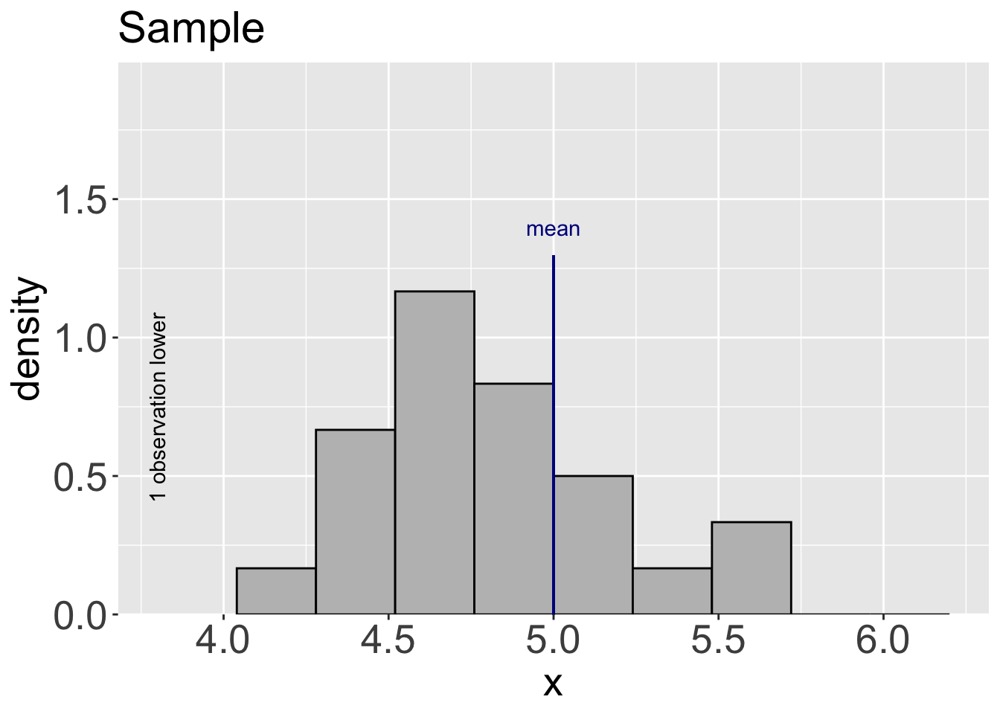
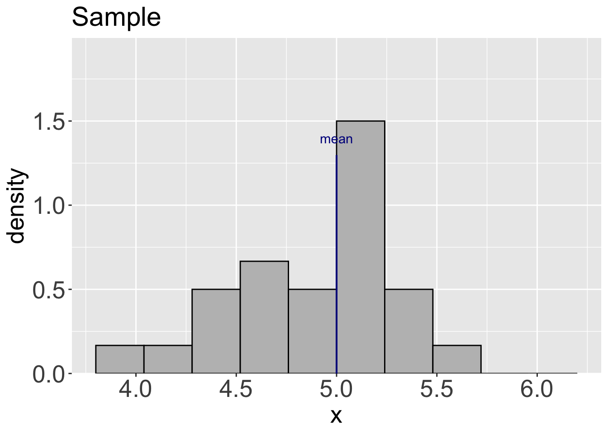
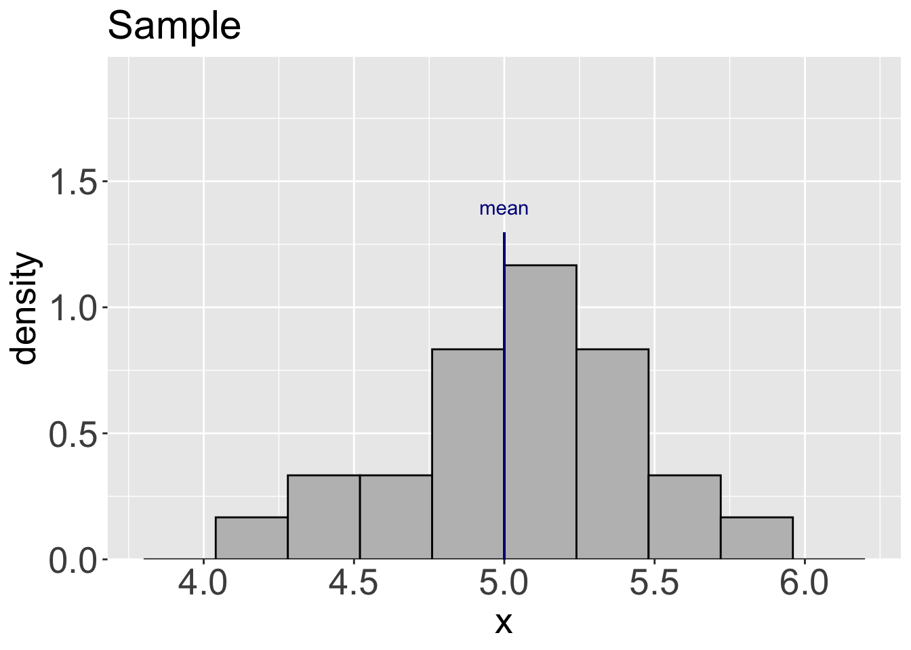
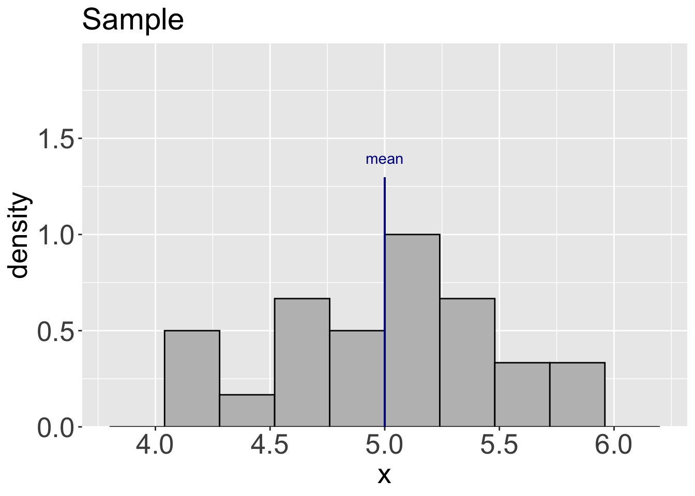
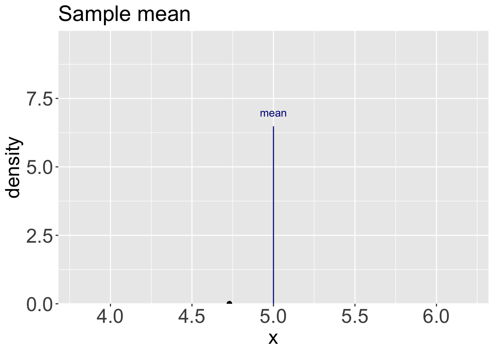
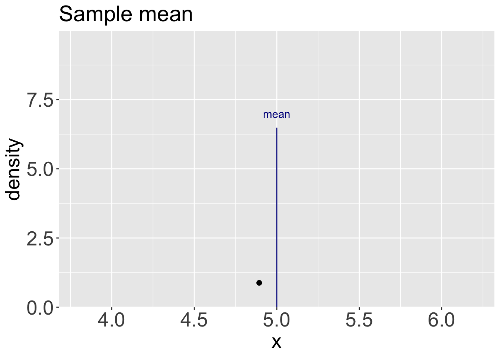
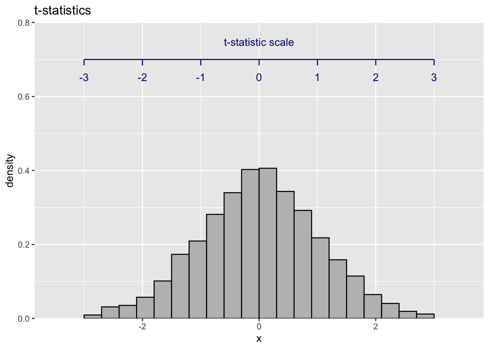
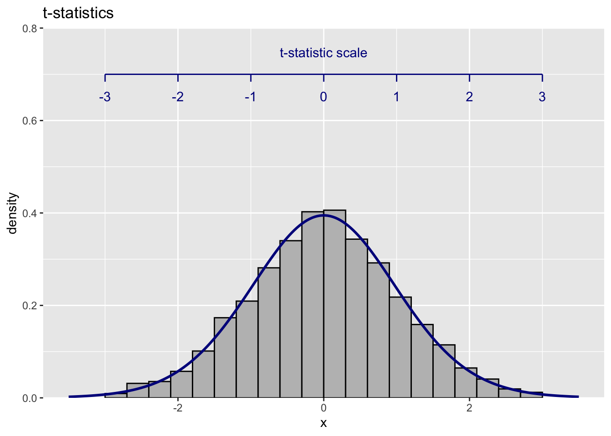

1.2 Quantifying uncertainty: standard error
The setup of the ‘thought experiment’ of the previous section was necessarily rather artificial, as we defined, through the settings in rp.sample, the population from which the samples were being drawn. In practice, of course, a sample is all we have and we seek to use this to learn about the population - perhaps simply its mean, or perhaps other features of interest. This is why the title of the current chapter is ‘Inference’, as we seek to infer features of the unknown population from the - usually rather limited - data in our sample.
We will explore this by continuing our thought experiment, using the population mean as the focus, as this is often a parameter of major interest. How accurate is the sample mean, \(\bar{x}\), as a guide to the population mean, denoted as \(\mu\)? Again, you may wish to run rp.sample live, to explore this. The plots below show, in the upper row, multiple samples, each of size 25. The second row of plots shows the mean of each sample, with the final plot in this row showing sample means accumulated over 50 different samples. The sample means are clustered round the population mean. There is variation in the sample means but the size of this is much smaller than the variation in the individual observations.

This is the point at which some theory can help us. If we denote the population standard deviation by \(\sigma\) and the size of the sample by \(n\), then a theoretical calculation tells that the standard deviation of the sample mean is \[ \mbox{se}(\bar{x}) = \sigma / \sqrt{n} . \] This gives us a measure of uncertainty, or inaccuracy, of the sample mean \(\bar x\) as an estimate of the population mean \(\mu\). In a change of terminology which reflects the fact that we are no longer dealing with the uncertainty of individual observations but of a feature of the underlying population, we refer to this as the standard error.
The left hand plot below shows a large collection of sample means along with a standard error scale. We can see that the sample means mostly lie within two standard errors of the population mean. This is a very important phenomenon which we should pause to highlight.
Most of the time,
the sample mean is within 2 standard errors of the population mean.We will exploit to this to create some very useful inferential tools. In fact, as we will see later, this principle is a much more general one which applies in many different settings involving a population parameter and an estimate of it.

One issue remains: the standard error involves the standard deviation of the population which, usually, we do not know. It is natural to estimate this by the sample standard deviation, \(s\). As the standard deviation of the data changes with every sample, it is easier to investigate this in terms of the t-statistic
\[
\frac{\bar{x} - \mu}{se(\bar x)} = \frac{\bar{x} - \mu}{s / \sqrt{n}} ,
\]
where \(\bar{x}\) and \(s\) denote the sample mean and standard deviation and \(\mu\) denotes the population mean. We can think of this as measuring the distance between the population and sample means in units of (estimated) standard error. The right hand plot below shows the t-statistics produced by rp.sample. Reassuringly, these generally lie within \(\pm 2\) which confirms that that principle highlighted above still applies. (From now on, we will generally assume that the term ‘standard error’ implies the estimation of any unknown parameters in the standard error formula.)
This gives a very helpful guide to the accuracy of the sample mean as a guide to the population mean but a more precise guide is available, so we should use this. Theoretical calculations can tell us about the complete distribution of the sample mean. When we are sampling from a normal population, it turns out that the sample mean also has a normal distribution, with mean \(\mu\) and the standard error shown above. When we use the estimated standard error, the t-statistic then becomes the focus and it turns out to have a t-distribution. The plot below superimposes the density function for this distribution on the t-statistics generated by rp.sample. The shape is very similar to the normal distribution with the main difference being that the t-distribution usually has slightly thicker tails. (This is due to the additional variation which arises from using the sample standard deviation in the expression for the standard error.) The t-distribution has a parameter called the degrees of freedom and in this setting that takes the value \(n-1\).

These ‘thought experiments’ have enabled us to consider some of the concepts involved when we aim to learn about a population parameter, such as a mean, from a sample of data. This places us in an good position to interpret what individual samples are able to tell us, using tools developed in the following sections.